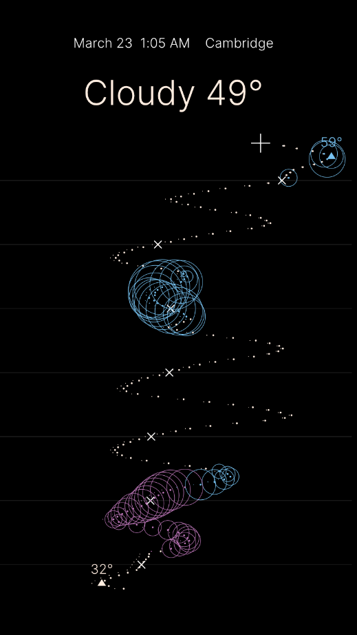

<!doctype html><html lang="en"><meta charset="utf-8"><meta name="viewport" content="width=device-width, initial-scale=1"><title>Hourly temperature and precipitation · Esther Xie</title><style>body{margin:0;background:#f5f6f7;color:#20262d;font:1rem/1.6 system-ui}main{max-width:52rem;margin:auto;padding:2rem 1.25rem 4rem}a{color:#20547b}h1{line-height:1.15}figure{margin:2rem 0 0}img{display:block;max-width:100%;height:auto;margin:auto}figcaption{margin-top:.7rem}nav{margin-top:1.6rem}</style><main><a href="index.html#/class/weather">Back to Weather apps</a><h1>Hourly temperature and precipitation</h1><p>A seven-day forecast concept that plots hourly temperature and precipitation.</p><figure><figcaption>Original screenshot. The interactive sketch is currently unavailable.</figcaption></figure><nav><a href="weather1.html">View the other weather concept</a></nav></main></html>